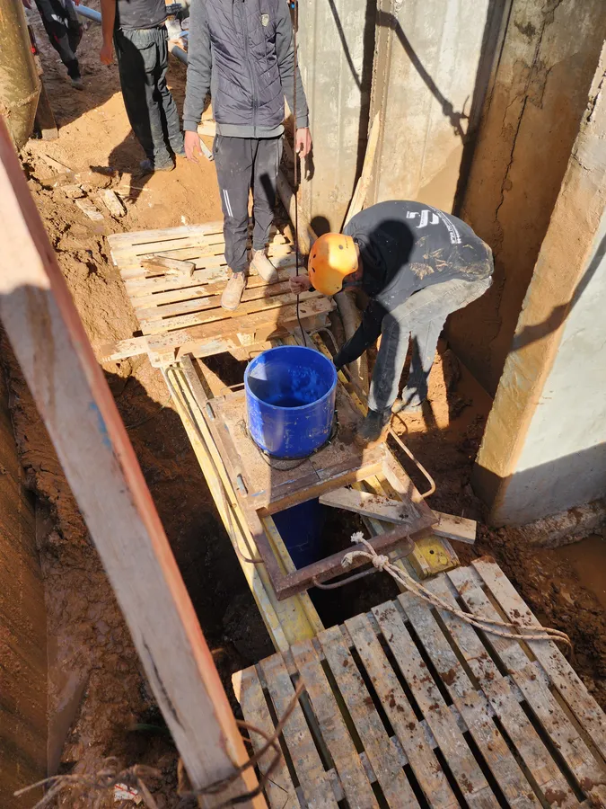
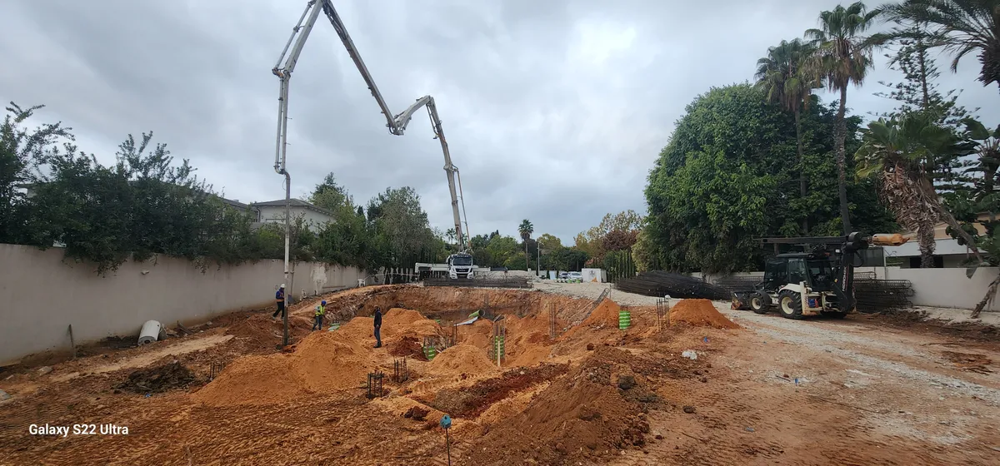

גלריית מיקרו-פיילים




מיקרו-פיילים (כלונסאות זעירים) הם פתרון מתקדם לחיזוק יסודות קיימים, ביסוס מבנים ושיקום תשתיות. קידוח בקוטר קטן (15-30 ס"מ) עם כושר נשיאה גבוה, מתאים במיוחד למרחבים מוגבלים ולגישה קשה – עם מינימום רעש ורעידות.
קבל הצעת מחיר
מיקרו-פיילים (Micropiles) הם כלונסאות זעירים בקוטר של 15-30 ס"מ, המוחדרים לעומקים של עד 30 מטר בקרקע. הם משמשים לחיזוק יסודות קיימים, ביסוס מבנים חדשים ושיקום תשתיות. למרות קוטרם הקטן, הם מספקים כושר נשיאה גבוה במיוחד בזכות חומרי מילוי מתקדמים (גראוט צמנטי בלחץ) וזיון פלדה איכותי. שיטה זו פותחה במקור באיטליה בשנות ה-50 ומאז התפשטה לכל העולם כפתרון יעיל ומוכח.
מיקרו-פיילים נדרשים במגוון מצבים: כאשר יש צורך בחיזוק יסודות של מבנה קיים שסובל משקיעות או סדקים, בביסוס מבנים באזורים עם גישה מוגבלת שלא מאפשרים ציוד קידוח גדול, בשיקום מבנים ישנים לפני שיפוץ או תוספת קומות, בעיגון קרקע במדרונות או באזורים לא יציבים, ובפרויקטי תשתית הדורשים ביסוס ללא רעידות ורעש – למשל ליד מבנים רגישים, בתי חולים או מבני מגורים מאוכלסים.
היתרונות המרכזיים של מיקרו-פיילים כוללים: אפשרות לעבודה במרחבים מוגבלים ובגישה קשה (הציוד קומפקטי ונכנס גם למרתפים וחללים סגורים), רעש ורעידות מינימליים – מה שהופך אותם למתאימים במיוחד לאזורים עירוניים ולעבודה ליד מבנים קיימים, התאמה לכל סוגי הקרקע כולל סלע, זמני ביצוע קצרים יחסית, וכושר נשיאה גבוה ביחס לקוטר הקטן שלהם. בנוסף, ניתן להתקין אותם בכל זווית – אנכית, אלכסונית ואפילו אופקית.
בהחלט. מיקרו-פיילים הם פתרון מצוין לבתים פרטיים, במיוחד כאשר יש צורך בחיזוק יסודות בית קיים, הוספת קומות, טיפול בשקיעות או סדקים, או ביסוס תוספת בנייה. הציוד הקומפקטי מאפשר עבודה בחצרות קטנות, בגני בית ואפילו בתוך מבנים קיימים – עם מינימום הפרעה לשכנים ולסביבה. אנו בא.א. עבודות קידוחים ביצענו פרויקטים רבים של חיזוק יסודות לבתים פרטיים ווילות באזור המרכז והצפון.
משך ההתקנה תלוי בהיקף הפרויקט, מספר הכלונסאות הנדרשים, עומק הקידוח ותנאי הקרקע. באופן כללי, התקנה של מיקרו-פייל בודד לוקחת בין שעה לכמה שעות. פרויקט ביסוס לבית פרטי יכול להימשך בין יום אחד למספר ימים. פרויקטים גדולים יותר – כמו חיזוק מבנה מסחרי או שיקום תשתית – עשויים להימשך מספר שבועות. אנו בא.א. עבודות קידוחים מתאימים את לוח הזמנים לדרישות הפרויקט ומבטיחים עמידה בזמנים.
מיקרו-פיילים (Micropiles), המוכרים גם בשמות כלונסאות זעירים, מיני-פיילים או כלונסאות שורש (Root Piles), הם אלמנטי ביסוס עמוקים בעלי קוטר קטן יחסית – בין 15 ל-30 סנטימטר – אך בעלי כושר נשיאה גבוה במיוחד. הטכנולוגיה פותחה לראשונה באיטליה בשנות ה-50 של המאה ה-20 על ידי המהנדס פרננדו ליזי, במטרה לספק פתרון לחיזוק יסודות מבנים היסטוריים שלא ניתן היה לגשת אליהם עם ציוד קידוח רגיל. מאז, השיטה התפשטה לכל העולם והפכה לאחד הפתרונות המובילים בתחום הביסוס והחיזוק.
מבחינה טכנית, מיקרו-פייל בנוי ממספר רכיבים: צינור פלדה או מוט זיון בקוטר הפנימי, גראוט צמנטי (תערובת צמנט ומים) המוזרק בלחץ גבוה לתוך הקידוח, ובמקרים מסוימים – כלוב ברזל נוסף לחיזוק. הקידוח מתבצע בעומקים של עד 30 מטר ויותר, תלוי בדרישות ההנדסיות ובתנאי הקרקע. כושר הנשיאה של מיקרו-פייל בודד יכול להגיע לעשרות ואף מאות טונות, תלוי בקוטר, בעומק ובסוג הקרקע. היתרון המרכזי הוא היכולת להעביר עומסים משמעותיים לשכבות קרקע עמוקות ויציבות, גם כאשר השכבות העליונות חלשות או לא יציבות.
תהליך ההתקנה של מיקרו-פיילים הוא שיטתי ומבוקר, וכולל מספר שלבים מוגדרים. בשלב הראשון – סקר ותכנון: מהנדס קונסטרוקציה מבצע סקר של המבנה והקרקע, מגדיר את מספר הכלונסאות הנדרשים, מיקומם, עומקם וכושר הנשיאה הנדרש. בשלב השני – הכנת האתר: סימון נקודות הקידוח, הכנת פתחי גישה במידת הצורך (למשל חציבה בריצפה קיימת), והצבת מכונת הקידוח הקומפקטית. בשלב השלישי – קידוח: מכונת הקידוח הקומפקטית קודחת לעומק הנדרש. הקידוח יכול להתבצע בשיטות שונות – קידוח רוטרי, קידוח הלם, או שילוב של שניהם – בהתאם לתנאי הקרקע. בשלב הרביעי – הכנסת הזיון: מוט הפלדה או צינור הפלדה מוחדר לתוך הקידוח. במקרים מסוימים מוחדר גם כלוב ברזל נוסף. בשלב החמישי – הזרקת גראוט: תערובת צמנטית מוזרקת בלחץ לתוך הקידוח, ממלאת את כל החללים ויוצרת מגע מלא בין הכלונס לקרקע. הלחץ מבטיח חדירה של הגראוט לסביבות הקידוח ומגביר את כושר הנשיאה. בשלב השישי – חיבור למבנה: ראש הכלונס מחובר למערכת היסודות הקיימת או לרפסודה חדשה באמצעות קורות חיבור, וכך מעביר את עומסי המבנה ישירות לשכבות הקרקע העמוקות והיציבות.
מיקרו-פיילים משמשים במגוון רחב של יישומים הנדסיים. חיזוק מבנים קיימים: זהו השימוש הנפוץ ביותר – חיזוק יסודות של מבנים שסובלים משקיעות דיפרנציאליות, סדקים במבנה, או צורך בהגדלת כושר הנשיאה לפני תוספת קומות. ביסוס בגישה מוגבלת: בזכות הציוד הקומפקטי, ניתן לבצע קידוח בתוך מבנים קיימים, במרתפים, בחללים צרים ובאזורים שלא ניתן להכניס אליהם מכונות קידוח רגילות. שיקום תשתיות: חיזוק גשרים, עמודי חשמל, מבני תעשייה, קירות תמך ומבנים ציבוריים. עיגון קרקע: מניעת שקיעות ומפולות, ייצוב מדרונות, ועיגון מבנים באזורים עם קרקע לא יציבה או רגישה לרעידות אדמה.
| פרמטר | מיקרו-פיילים | כלונסאות רגילים |
|---|---|---|
| קוטר קידוח | 15-30 ס"מ | 60-120 ס"מ ומעלה |
| עומק מקסימלי | עד 30 מטר ומעלה | עד 60 מטר ומעלה |
| גודל ציוד | קומפקטי – נכנס למרתפים וחללים צרים | כבד ומסורבל – דורש שטח פתוח |
| רמת רעש ורעידות | מינימלית – מתאים לסביבה עירונית | גבוהה – עלול להפריע לסביבה |
| התאמה לשיפוץ מבנים קיימים | מצוין – אידיאלי לחיזוק יסודות | מוגבל – קשה לבצע ליד מבנים |
| כושר נשיאה ליחידה | עשרות עד מאות טונות | מאות עד אלפי טונות |
| גמישות בזוויות התקנה | כל זווית – אנכי, אלכסוני, אופקי | בעיקר אנכי |
| זמני ביצוע | מהירים יחסית | ארוכים יותר |
רעש נמוך וללא רעידות משמעותיות: בניגוד לכלונסאות מרובעים המוחדרים בהלמות (Driven Piles), מיקרו-פיילים מותקנים בשיטת קידוח שקטה יחסית. הדבר הופך אותם לפתרון אידיאלי לעבודה באזורים מגוררים, ליד בתי חולים, מוסדות חינוך ומבנים רגישים – ללא חשש מנזק לסביבה או הפרעה משמעותית לשכנים.
ציוד קומפקטי וגמיש: מכונות הקידוח למיקרו-פיילים קטנות ונמוכות במיוחד, ומאפשרות עבודה בתנאים שבהם מכונות קידוח רגילות פשוט לא יכולות לפעול. ניתן להכניס את המכונה למרתפים עם גובה תקרה נמוך, לחללים צרים בין מבנים, לחצרות קטנות ולאזורים עם גישה מוגבלת. גמישות זו היא אחד היתרונות הגדולים ביותר של הטכנולוגיה.
מתאים לשיפוצים ותוספות בנייה: כאשר בעל בית מעוניין להוסיף קומה למבנה קיים, לבצע שיפוץ משמעותי, או לטפל בבעיית שקיעות – מיקרו-פיילים הם הפתרון המועדף. ניתן להתקין אותם מבלי לפנות את הדיירים, עם מינימום הרס לריצוף ולמבנה הקיים, ולהתחיל בעבודות הבנייה מיד לאחר ההתקנה.
כושר נשיאה גבוה: למרות קוטרם הקטן, מיקרו-פיילים מספקים כושר נשיאה מרשים. הזרקת הגראוט בלחץ גבוה יוצרת "בצל" של צמנט סביב הכלונס, המגדיל את שטח המגע עם הקרקע ומעצים את כושר החיכוך. בקרקעות סלעיות, כושר הנשיאה יכול להגיע לערכים גבוהים במיוחד.
א.א. עבודות קידוחים ופיתוח מביאה ניסיון של מעל 10 שנים בתחום הקידוחים והביסוס, כולל ניסיון עשיר בביצוע מיקרו-פיילים לחיזוק יסודות ושיקום מבנים. אנחנו קבלן רשום מספר 36281 עם כל האישורים, הביטוחים והרישיונות הנדרשים לביצוע עבודות ביסוס מורכבות. הציוד שלנו כולל מכונות קידוח קומפקטיות ומתקדמות, המאפשרות עבודה בכל סוגי התנאים ובכל גישה. כל הציוד מתוחזק ומאושר לפי תקן, ומופעל על ידי צוות מוסמך ומנוסה.
אנו מתחייבים לעבודה מקצועית ואיכותית, בהתאם לתכניות המהנדס ולמפרטים הטכניים. הצוות שלנו עובד בשיתוף פעולה מלא עם מהנדסי הקונסטרוקציה של הפרויקט, ומבטיח ביצוע מדויק של כל דרישה. אנו מספקים ליווי מקצועי מלא – מהשלב הראשון של התכנון ועד לסיום העבודה – כולל דוחות קידוח מפורטים, בדיקות איכות ותיעוד מלא. לקוחותינו כוללים חברות בנייה, קבלני תשתיות, רשויות מקומיות ולקוחות פרטיים, וכולם נהנים משירות אמין, מקצועי וזמין. צרו קשר עוד היום לקבלת ייעוץ מקצועי והצעת מחיר ללא התחייבות.
השאירו פרטים ונחזור אליכם בהקדם עם הצעה מותאמת
השאירו פרטים ונחזור אליכם תוך שעות ספורות